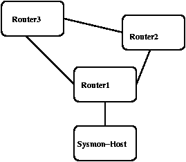

sysmon-0.91.7 Configuration Documentation
Sysmon includes a versatile configuration file format.
Items covered by this document.
- Overview
- Global Configuration Options
- Object Configuration Options
- Example Configuration of each test-type
- Example Configuration of each Object
option
- Replacement Options that can be used
1. Overview
Sysmon now allows a significant number of configuration options, and the easier
addition of new features. This also allows us to configure sysmon to
detect parallel paths and outages on them properly, including ring topology
as well as a number of other things. Take the following example:

With this network topology, we can monitor each link properly. Versions
prior to 0.90 would either report multiple outages, or not have the ability
to report the outages properly.
The above network topology can be represented in the following network
configuration file:
1: root=sysmon-host;
2:
3: object sysmon-host {
4: ip "sysmon-host";
5: type ping;
6: desc "ping-sysmon-host";
7: dep "router1";
8: };
9:
10: object router1 {
11: ip "router1.example.com";
12: type ping;
13: desc "router1";
14: };
15:
16: object router2 {
17: ip "router2.example.com";
18: type ping;
19: desc "router2";
20: };
21:
22: object router3 {
23: ip "router3.example.com";
24: type ping;
25: desc "router3";
26: };
27:
28: object router1-2-link {
29: ip "1.2.3.4";
30: type ping;
31: desc "link-rtr1-to-rtr2";
32: dep "router1";
33: dep "router2";
34: };
35:
36: object router2-3 {
37: ip "2.3.4.5";
38: type ping;
39: desc "link-rtr2-to-rtr3";
40: dep "router2";
41: dep "router3";
42: };
43:
44: object rtr1-3-link {
45: ip "3.4.5.6";
46: type ping;
47: desc "rtr1-3-link";
48: dep "router1";
49: dep "router3"
50: };
Now, here, we declare an object, and then configure the locally dependent
options. All checks require a description, and a check type, including
the ip declaration. You can specify either an ip address or a hostname
in this field.
When you create an object, you specify a symbolic name. The name
router1 could just as easily say "swiss-cheese", it's just used internally
to look up the dependencies and create the adjancies table.
2. Global Configuration Options
- config showupalso;
- Make sysmon show the hosts checked as up as well as the ones that are checked as down in the configuration file
- config nologconnects;
- Do not log connect information from the client.
By default sysmond listens on port 1345 for client connections from the curses,
python, java, and other clients).
- config noheartbeat;
- Sysmon normally sends a "heartbeat" packet when started
to our registration server. This includes the hostname, version of
sysmon, and the operating system you are running on. Sysmon only sends
this once upon startup. Failure to send this will not affect system
performance or operation.
- config nosubject;
- Sysmon normally sends a Subject: line in the message to
the contact specified within an object. Some paging systems have problems
when a subject is specified, or it does not get passed along properly when
you have limited characters to be received. Specifying this option
causes sysmon to omit the subject: line.
- config statusfile [ text | html ] "/path/to/file";
- Sysmon has the ability to specify a file to dump current
status to. File type can be either html or text. This file is
updated whenever there is a state change on an object.
- config logging syslog [ facility | none ];
- Sysmon logs various information via syslog. You
can specify what service to log to, or specify "none" for no logging).
- config queuetime [ integer ]; (Default: 60)
- This allows you to specify how often an object is queued
to be checked. This defaults to 60 seconds after the last test is over.
- config dnsexpire [ integer ]; (Default: 900)
- This allows you to specify how often sysmon's internal
dns cache is expired. Default is 15 minutes. Time is specified
in seconds.
- config dnslog [ integer ]; (Defualt: 600)
- This allows you to specify how often sysmon logs dnscache
related data. Default is 10 minutes. Time is specified in seconds.
- config pageinterval [ integer ];
- This option allows you to specifiy that sysmon send a
reminder e-mail/page to you. Default is to not send reminders.
Time is specified in minutes.
- config maxqueued [ integer ]; (Defualt: 100)
- This specifies how many tests may be performed at one
time. Default is 100. Because of file descriptor limits that
your operating system may have, and the file descriptor intensity of sysmon,
you may need to increase or decrease this depending on the size of your configuration file.
- config numfailures [ integer ]; (Default: 4)
- This specifies how many times a host should be checked
as "down" before the contact is e-mailed/paged. Default is 4.
- config pmesg " string ";
- This specifies the format of the text sent in the body
of the message. See replacement options for ways to display information
about the test. Default is specified in config.h (grep PMESG src/config.h).
- config [ from | sender ] " username@example.com";
- Allows you to reset who the page/e-mail comes from instead
of root@localhost.
- config subject "string";
- This specifies the format of the text sent in the subject
of the message. See replacement options for ways
to display information about the test. Default is specified in config.h
grep SUBJECT src/config.h).
- config upcolor "string";
- This allows you to specify a color as used in HTML tags
to be used for hosts that are currently UP as displayed in the configured
html file.
- config downcolor "stringi";
- See config upcolor.
- config recentcolor "string";
- Hosts that are down, but have not reached the count of
numfailures are this color. See config upcolor.
- config replyto "user@example.com";
- Allows insertion of reply-to: header in e-mail/pages sent.
- config errorsto "user@example.com";
- Allows insertion of errors-to: header in e-mail/pages
sent.
- config header "text";
- Allows insertion of header.
- config pidfile "path";
- Allows the PID file to be written somewhere more sensible than the
default of /etc/sysmon.pid; /etc/ is readonly on some systems for
security reasons.
- config html refresh seconds;
- Allows modification of the HTML status page refresh time (default
60 seconds).
- config authkey "text";
- Password/Authentication key used to restrict access to
client port.
- config drop_privileges;
- Drop root privileges after initialization for enhanced security. When enabled,
sysmond will switch to a non-privileged user after opening raw sockets and binding
privileged ports. ICMP operations are performed via the setuid sysmon-ping-helper.
Cannot be used when ICMP monitoring is disabled.
- config disable_icmp;
- Disable all ICMP (ping) monitoring. This prevents the daemon from opening raw
sockets and allows it to run entirely without privileges. Note that this disables
all ping and pingv6 tests.
- config trap_port integer; (Default: 162)
- Specify the UDP port for receiving SNMP trap alerts. Default is 162 (standard
SNMP trap port). Requires root privileges or cap_net_bind_service to bind ports below 1024.
- include "path";
- Specify another configuration file to be included at
this point.
- root "object-name";
- This is a required option. You specify what object
in your config file is the first dependency in your monitoring, so we know
where we are within the network to allow us to traverse it properly.
3. Object Configuration
Options
Once you have declared an object, the following configuration options exist
within it:
- also-notify "text";
- Not implemented yet.
- contact "username@example.com";
- e-mail address to send up/down messages to.
- contact_on down|up|both;
- Defines when this event should cause a contact. If down, notification
is only sent (and programs run) after maxdown iterations of service failure.
If up, notification happens only after maxdown iterations of service success.
If both, notification happens after maxdown iterations of failure, and
instantly on success.
- dep "object";
- Dependency for this object. If that host is not
up, we do not get monitored.
- desc "text";
- Specify the description of the object
- ip "[hostname | ip-address ]";
- An IP address or valid dns-name of the host to be
monitored.
- page "text";
- Not implemented yet.
- password "password";
- Only valid for pop3, imap and radius check.
- port [ integer ];
- Specify the port type for tcp and udp based checks
- reverse;
- Reverse the meaning of up vs down in monitoring.
Useful when using to monitor other sysmonds and to take over backup monitoring.
- secret "string";
- Only valid for radius check.
- spawn "path";
- Program to execute upon monitoring failure. Can
also contain replacement options that PMESG and SUBJECT can contain.
up, we do not get monitored.
- type "[ ping | pingv6 | pop3 | tcp | udp | dns | radius | nntp | smtp | imap | x500 | www | sysmon | snmp ]";
- Specify the check type.
- snmp-type "[ low | high | rate | exact | range | reboot | compare ]";
- SNMP test type (required for snmp based tests)
- snmp-octets;
- Treat oid queried as octet(byte) counter so you can specify snmp-rate in bps instead of bytes/sec
- url "string";
- URL to be checked. Only valid for http check.
- urltext "string-to-search-for";
- String to search for within the url requested.
- username "username";
- Only valid for pop3, imap and radius check.
- min_pings integer; (Default: 1)
- Minimum number of successful ping responses required to consider host UP.
Used for packet loss monitoring. Must be less than or equal to send_pings.
- send_pings integer; (Default: 5)
- Number of ICMP echo requests to send during each check interval.
Used for packet loss monitoring. Higher values provide more accurate loss statistics.
- packet_loss_threshold percentage; (Default: 0.0)
- Packet loss percentage threshold (0.0-100.0). If packet loss exceeds this value,
an alert is triggered even if the minimum number of pings succeeded. Example: 25.0
triggers alert when more than 25% of packets are lost.
- rtt_threshold milliseconds;
- Round-trip time threshold in milliseconds. If average RTT exceeds this value,
an alert is triggered. Used for latency monitoring. Example: 100 triggers alert
when average RTT exceeds 100ms.
- jitter_threshold milliseconds;
- Jitter threshold in milliseconds. Jitter is the variation in RTT between
consecutive packets. If jitter exceeds this value, an alert is triggered.
Used for monitoring connection stability. Example: 50 triggers alert when
jitter exceeds 50ms.
- wakeup_check;
- Enable proactive wakeup monitoring. When enabled, sysmond attempts to wake
unreachable hosts using Wake-on-LAN before declaring them down. Useful for
monitoring hosts that may be in power-saving modes.
- wakeup_retries integer; (Default: 3)
- Number of Wake-on-LAN attempts before declaring host permanently down.
Only used when wakeup_check is enabled.
- wakeup_check_interval seconds; (Default: 300)
- Time to wait in seconds between wakeup attempts. Allows time for host to
complete boot process. Only used when wakeup_check is enabled.
- trap_alert;
- Enable SNMP trap alert monitoring for this object. When enabled, sysmond
listens for SNMP traps from this host and triggers alerts based on trap
severity and content. Traps are matched to objects by source IP address.
- matched_host "object-name";
- Associate this trap monitoring object with a specific host object.
Used to link SNMP trap alerts with the corresponding monitored host.
Allows trap-triggered state changes to affect the associated host's status.
5. Example Configuration
of each Object Option
| Port |
object tcp-shoutcast {
ip "198.88.20.7";
type tcp;
port 8000;
desc "shoutcast";
contact "admin@example.com";
}; |
6. Replacement Options
| Option
|
What it does
|
%m
|
local host name
|
%H
|
DNS name of host being monitored
|
%s
|
service
|
%p
|
port number (numeric)
|
%T
|
Current Time hh:mm:ss
|
%t
|
Current Time mm dd hh:mm:ss
|
%d
|
Downtime dd:hh:mm
|
%D
|
Downtime with seconds dd:hh:mm:ss
|
%i
|
Unique ID for outage
|
%I
|
IP of host down
|
%w
|
warning/what
|
%u
|
error-type converted into string describing it
|
%h
|
hostname with failure
|
%r
|
reliability percentage
|
%V
|
Verbose History (not implemented)
|
%c
|
Failure iteration count (since last success)
|
%C
|
Success iteration count (since last failure)
|
%U
|
Service state (as `up' or `down')
|
 $Id: config.html,v 1.10 2003/12/10 04:39:40 jared Exp $
$Id: config.html,v 1.10 2003/12/10 04:39:40 jared Exp $